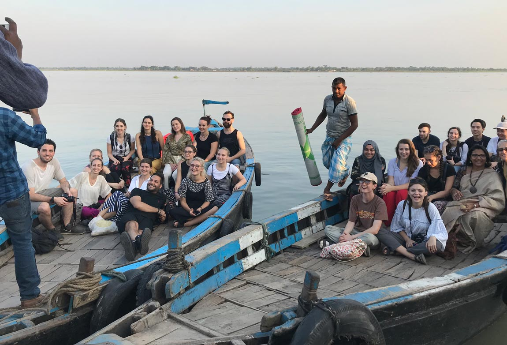
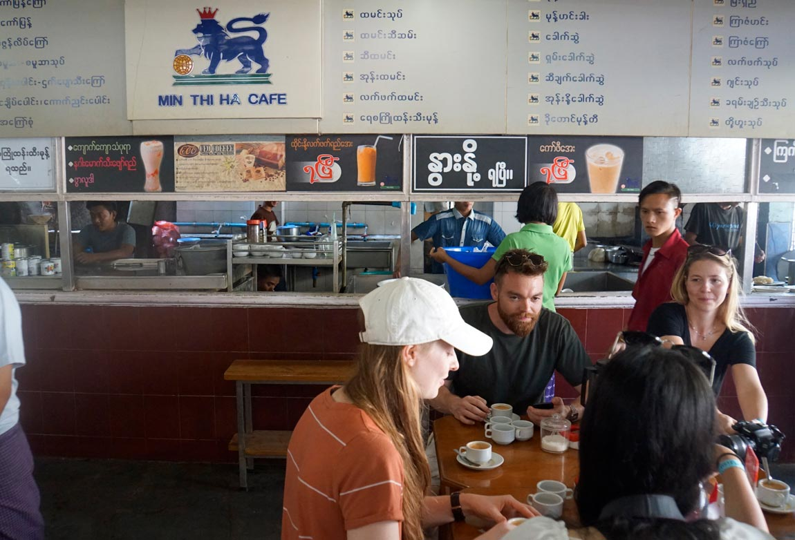

<div class="Layout__wrapper">
  <main class="Layout__main">
      <div class="pedagogyContainer">

          <div id="pedagogySubOne" class="TemplateContainer">
            <div class="TemplateBlock">
              <h1 class="mainTitle whiteTextHighLight">
                Grounding design pedagogy <br>
                in the monsoon
              </h1>

              

              <p class="copyText pedagogyCopyTextOne">
                From 2016 to 2019 Monsoon Assemblages
                ran DS18, a design studio in the Master of
                Architecture programme at the University of
                Westminster. The studios were framed by
                the monsoon, meaning that atmospheric,
                ecological, material, socio-political and
                technological considerations were introduced
                into design processes and that scales
                normally considered too large or too small
                for architecture merited attention. Students
                investigated how design might be transformed
                if it was no longer an exclusive capacity
                of human designers acting on the world,
                but something shared with the material
                forcefulness of the earth itself.<sup>1</sup>
              </p>

              <p id="pedagogyImageDescriptionOne" class="TemplateImageDescription">
                Above: Digital constructions of rainwater droplets, Laura Nica.
              </p>

            </div>
            </div>

            <div id="pedagogySubTwo" class="TemplateContainer">
              <div class="TemplateBlock">
                <h1 class="mainTitleRight">
                  Formulation
                </h1>

                <p class="copyText pedagogyCopyTextTwo">
                  The Monsoon Assemblages studios were based
                  in Chennai in 2016-17, in Dhaka in 2017-18, and
                  in Yangon in 2018-19. Each approached the
                  agency of the monsoon differently. The Chennai
                  studio was animated by the agency of monsoon
                  rain, a volatile and unreliable guide, oscillating
                  between scarcity and excess. The Dhaka studio
                  was formulated around relations between
                  human agency and the material dynamics of the
                  monsoonal delta. The Yangon studio approached
                  the monsoon from a nonhuman perspective,
                  asking students to reimagine a monsoonal world
                  in common with a nonhuman entity threatened
                  by the violence of extraction or development. The
                  studios used three spatial research methods –
                  cartography, simulation and fieldwork – to attune
                  to monsoonal dynamics and to frame design
                  briefs.
                </p>

                <div id="pedagogyGridOne" class="TemplateImageContainer">
                  
  
                  
                </div>

                <iframe id="PedagogyVideoOne" src="https://www.youtube.com/embed/xSKkyS_Z53Q?modestbranding=1&controls=0&showinfo=0&rel=0&autoplay=1&loop=1&muted=1&playlist=xSKkyS_Z53Q" frameborder="0" allow="accelerometer; autoplay; clipboard-write; encrypted-media; gyroscope;" allowfullscreen></iframe>

                <div id="pedagogyGridTwo" class="TemplateImageContainer">
                  
  
                  
                </div>

                <p id="pedagogyImageDescriptionTwo" class="TemplateImageDescription">
                  Left top: Laura Nica at her final design
                  review for the Chennai studio. <br> <br>
                  Lower left top: Students in the
                  Bangladesh studio boarding boats in
                  Khulna.<br> <br>
                  Middle: A mini-cyclone witnessed by
                  students on the Buriganga River in
                  Dhaka.<br> <br>
                  Lower left: Students in the Bangladesh
                  studio on a terrace in the historic city of
                  Sonargoan, one of the old capitals and
                  administrative centres of Bengal.<br> <br>
                  Bottom: Chaung Gyi on the Ayeyarwady
                  River, Myanmar. 
                </p>

              </div>
              </div>

              <div id="pedagogySubThree" class="TemplateContainer">
                <div class="TemplateBlock">
                  <h1 class="mainTitleRight">
                    Cartography
                  </h1>

                  <p class="copyText pedagogyCopyTextThree">
                    Cartographic techniques were used in the studio
                    to push understandings of monsoonal scale and
                    difference. They produced spatial knowledge at
                    scales usually considered too large to offer any valid
                    questions for architecture – the scale of the earth, a
                    subcontinent, a delta, a river, or of matters that were
                    usually considered of no relevance to architecture
                    – hyperaccumulating plant species, cyclone tracks,
                    instagram geotags. Mapping allowed students to
                    develop an understanding of the wider monsoonal
                    forces acting on a particular site or situation. It
                    involved learning to access meteorological, satellite
                    and other data and bringing them into architecture
                    using the digital tools Rhino, Grasshopper, Realflow
                    and the Adobe suite.
                  </p>

                  

                  <p id="pedagogyImageDescriptionThree" class="TemplateImageDescription">
                    Hyperaccumulating plant species
                    in India. These species are able to
                    grow in soil or water with high metal
                    concentrations which they absorb
                    through their roots into their tissues. <br>
                    Drawing by Tom Benson.                           
                  </p>

                  

                  

                  

                  <p id="pedagogyImageDescriptionFour" class="TemplateImageDescription">
                    From left to right: Quarterly rainfall in
                    Chennai, 1950-2015; Average monthly
                    winds in Chennai, 1950-2015; High and
                    low tides, morning and evening, June
                    and December 2016, Chennai. <br>
                    Drawings by Seetul Ghattaora.                        
                  </p>

                  

                  

                  <p id="pedagogyImageDescriptionFive" class="TemplateImageDescription">
                    Left: A combination of air and bird data
                    gathered to create a calendar of bird
                    migration in Myanmar. <br><br>
                    Right: Seasonal tropospheric winds in
                    Myanmar in January and July, at ground
                    level, 6 kms high and the top of the
                    troposphere. <br>
                    Drawings by Rachel Wakelin.                      
                  </p>

                  

                  

                  <p class="copyText pedagogyCopyTextFour">
                    “I learnt how to represent data in new
                    and unconventional ways in order
                    to communicate complex research
                    ideas in more creative forms. Doing
                    this has been challenging but it
                    has given me skills to analyse data
                    and design architecture informed
                    by a strong body of research. This
                    emphasis on how we communicate
                    research and data is what drew me to
                    this studio and is something I will use
                    going forward”.<sup>2</sup>
                  </p>

                  <p id="pedagogyImageDescriptionSix" class="TemplateImageDescription">
                    Left: The rice crop cycle in Myanmar. The
                    main crop cycle starts in May and lasts
                    for 112 days. Farmers than produce a
                    second harvest of rice if the conditions
                    are right or plant a different crop. <br> <br>

                    Right: Global rice varieties. There are
                    thought to be over 4,000 varieties
                    of cultivated rice grown in over 100
                    countries, of which Myanmar grows
                    seven. <br>

                    Drawings by Katie Dechow.                                               
                  </p>

                  <div class="pedagogyMapContainerOne">
                    
                  </div>

                  <div class="pedagogyMapContainerTwo">
                    
                  </div>

                  <p id="pedagogyImageDescriptionSeven" class="TemplateImageDescription">
                    Left: Jade licenses in Myanmar in 2015-
                    2016, James Purchon. <br> <br>
                    Right: Pagodas along the Ayeyarwady
                    River between the confluence of the
                    May Kha and Mali Kha rivers and Bagan,
                    Aimee Daniels.                                                
                  </p>

                      

                    

                  <p id="pedagogyImageDescriptionEight" class="TemplateImageDescription">
                    Left: Myanmar’s oil and gas blocks, Fiona
                    Grieve. <br> <br>
                    Right: Environmental conflict in
                    Bangladesh, 26/11/2012 to 01/10/2017,
                    Charlotte Birch.                                                
                  </p>

                    

                  <p id="pedagogyImageDescriptionNine" class="TemplateImageDescription">
                    The formation of jadeite, a chemical
                    process that takes place in the earth’s
                    high pressure subduction zones where
                    one tectonic plate is pushed under
                    another. Jadeite is thus known as the
                    subduction mineral. Drawing by James
                    Purchon.                                              
                  </p>

                    

                    

                    
                  
                  <p id="pedagogyImageDescriptionTen" class="TemplateImageDescription">
                    From left to right: Cyclone tracks over
                    Bangladesh, 1956-2016; Storm surge
                    levels, Bangladesh, 1950-2010; Cyclone
                    shelters capacity and state in 16 coastal
                    districts of Bangladesh. <br>
                    Drawings by Qishuo Zhang.                                                         
                  </p>

                </div>
                </div>

                <div id="pedagogySubFour" class="TemplateContainer">
                  <div class="TemplateBlock">
                    <h1 class="mainTitleRight">
                      Simulation
                    </h1>

                    <iframe id="PedagogyVideoTwo" src="https://www.youtube.com/embed/xJHxz9NX2wE?modestbranding=1&controls=1&showinfo=0&rel=0&autoplay=0&loop=1&muted=0&playlist=xJHxz9NX2wE" frameborder="0" allow="accelerometer; autoplay; clipboard-write; encrypted-media; gyroscope;" allowfullscreen></iframe>

                    <p id="pedagogyImageDescriptionEleven" class="TemplateImageDescription">
                      Simulation of a thunderclap, Cid Schuler.                                             
                    </p>

                    <p class="copyText pedagogyCopyTextFive">
                      The studio then used digital simulation to
                      research monsoonal materiality and dynamics
                      at the particulate scale. Digital tools made it
                      possible to investigate and speculate on the
                      outcomes of relational material processes in
                      virtual space by altering variables and recording
                      their outcomes. Not only did this introduce
                      students to processual approaches to design
                      thinking and the consequences of intervening in
                      them, it also developed the aesthetic vocabulary
                      of the studio. This research was undertaken
                      using the software package RealFlow in
                      conjunction with Rhino and Grasshopper.
                    </p>

                    <p id="pedagogyImageDescriptionThirtyOne" class="TemplateImageDescription">
                      Simulation of sediment movement over
                      a river bed, Raymonde Bieler.                                          
                    </p>

                      

                      

                      

                      

                      

                      

                    <p id="pedagogyImageDescriptionTwelve" class="TemplateImageDescription">
                      Simulation of gold panning, Sara
                      Kosonovic.                                     
                    </p>

                    <div id="pedagogyGridThree" class="horizontalContainer">
                      <div class="containerRow">
                      

                      <iframe id="PedagogyVideoThree" src="https://www.youtube.com/embed/Xe1E-I4mz1w?modestbranding=1&controls=0&showinfo=0&rel=0&autoplay=1&loop=1&muted=1&playlist=Xe1E-I4mz1w" frameborder="0" allow="accelerometer; autoplay; clipboard-write; encrypted-media; gyroscope;" allowfullscreen></iframe>
                  </div>
                  </div>

                  <p id="pedagogyImageDescriptionThirteen" class="TemplateImageDescription">
                    Left: Simulation of the erosion of a river
                    bed, Sarah Bass. <br> <br>
                    Right Simulation of fiddler crab
                    burrowing, which aerates sediment and
                    plays a vital role in mangrove ecologies. <br>
                    Simulation by Georgia Trower.                                   
                  </p>
                    </div>
                    </div>


            <div id="pedagogySubFive" class="TemplateContainer">
              <div class="TemplateBlock">
                <h1 class="mainTitleRight">
                  Embodied experience
                </h1>

                  


                <p class="copyText pedagogyCopyTextSix">
                  Each November students were taken on ten day field trips to their city of study and further
                  afield in the region. The trips were opportunities
                  for students to gain knowledge of the everyday
                  reality of the monsoon – its air, its heat, its
                  sounds, its wetness, its plant and animal
                  species, its food, its history, its ways of life,
                  through embodied experience. Observations
                  were recorded in notebooks, photographs and
                  video. Through formal meetings with experts,
                  tours, chance encounters and peer exchange,
                  students gained embodied knowledge
                  to complement the data driven, abstract
                  knowledge of the monsoon that other studio
                  techniques generated.
                </p>

                <div id="pedagogyGridFour" class="TemplateImageContainer">
                  
  
                  
                </div>

                <p class="copyText pedagogyCopyTextSeven">
                  “The field trip to Chennai, India
                  was a key turning point. Empirical
                  evidence makes one understand the
                  issue beyond figures and statistics.
                  I got to experience the effects of
                  the monsoon and climate change
                  through my own eyes and more
                  importantly through the eyes of
                  people living there, dealing with
                  these issues directly. I was greatly
                  inspired by their innovative ideas and
                  positive attitude towards dealing with
                  disaster. In Chennai we witnessed
                  how to embrace the monsoon and
                  celebrate its presence; a lesson well worth sharing”.<sup>3</sup>
                </p>

                <div id="pedagogyGridFive" class="TemplateImageContainer">
                  
  
                  
                </div>

                <div id="pedagogyGridSix" class="TemplateImageContainer">
                  
  
                  
                </div>

                
                <p id="pedagogyImageDescriptionFourteen" class="TemplateImageDescription">
                  Left top: University of Westminster
                  students interacting with Anna University
                  students in Chennai. <br> <br>
                  Left upper centre: Flooded Chennai
                  street. <br> <br>
                  Left lower centre: Group portrait of
                  students on the Meghna River in
                  Bangladesh. <br> <br>
                  Left Bottom: A tea house in Mandalay,
                  Yangon. <br> <br>
                  Right top: Photographing the Khan
                  Mohammad Mirza Mosque in Old Dhaka.
                  Right centre: 19th Street in the Chinese
                  Quarter of Yangon. <br> <br>
                  Right bottom: Infrastructural tourism in
                  Mongla, Bangladesh.                                
                </p>

              </div>
              </div>
        

              <div id="pedagogySubSix" class="TemplateContainer">
                <div class="TemplateBlock">
                  <h1 class="mainTitleRight">
                    Reassembling the monsoon
                  </h1>

                    

                  <p id="pedagogyImageDescriptionFifteen" class="TemplateImageDescription">
                    Hilsa fish corridor, Myanmar, Omar Manshi.
                    This project aims to create a safe passage for hilsa
                    fish in the Ayeyarwady River, where their lifecycle is
                    threatened by human activities. Through the use of salt
                    to promote phytoplankton growth for fish to feed on and
                    charcoal to clean the water, a safe corridor is provided to
                    guide their seasonal passage up and down the river.                           
                  </p>

                  <p class="copyText pedagogyCopyTextEight">
                    Through mapping, simulation and fieldwork,
                    students positioned themselves within a
                    monsoonal life-world and identified a topic of
                    enquiry for their design projects. Projects ranged
                    in scale and complexity from a prototype to
                    prevent the spread of water-borne disease in
                    Dhaka to housing units shaped by wind in Chennai
                    to a corridor for hilsa fish in the Ayeyarwady River
                    in Myanmar. By starting with the monsoon, a far
                    wider range of possibilities and strategies for
                    design to reframe relations between humans,
                    nonhumans and earth systems was opened up
                    than would have been possible had one started
                    with architecture.
                  </p>

                  <p class="copyText pedagogyCopyTextNine">
                    “The studio taught me that architecture
                    is so much more than a reaction to its
                    immediate site and needs of the user.
                    The integration of science, research and
                    policy that the studio pushed, from global
                    to micro scales, made me aware of the
                    numerous systems which are interwoven
                    and can offer richness to a project. The
                    seriousness with which the studio deals
                    with the climate emergency and opens
                    up wider discussions is something I think
                    has to be recognised and celebrated. ... I
                    really enjoyed being given the opportunity
                    to explore in depth something completely
                    unrelated to architecture, to weave it into
                    a story and explore its connection to the
                    climate crises and the built environment”.<sup>4</sup>
                  </p>

                    

                    

                  <p id="pedagogyImageDescriptionSixteen" class="TemplateImageDescription">
                    Shwe recuperation corridor, Myanmar, Fiona Grieve.
                    This project explores how to transform the
                    Myanmar-China gas and oil pipeline from an
                    instrument of destruction and loss to one of
                    education and compensation. The corridor
                    comprises a network of instruments, heat taps and
                    tribunals to mediate disputes and raise awareness
                    of the social and environmental impacts of foreign
                    investment in Myanmar.                          
                  </p>

                    

                    

                  <p id="pedagogyImageDescriptionSeventeen" class="TemplateImageDescription">
                    Avian air: a tropospheric bird sanctuary, Mandalay,
                    Myanmar, Rachel Wakelin. <br>
                    The global migration patterns of birds are changing,
                    linked to climate change. This bird watching tower on
                    a site in Mandalay is a hybrid typology that combines
                    bird watching with displays of data about migration
                    and climate change. Its form is derived from the
                    mapping of tropospheric climate data.                          
                  </p>
                  
                    

                  <p id="pedagogyImageDescriptionEighteen" class="TemplateImageDescription">
                    Peri-marsh, Chennai, Monica Cristu. <br>
                    This project restores a vacant site adjacent to
                    the Pallikaranai Marsh in south Chennai to the
                    marsh, and proposes a housing typology to
                    live within its undulating levels of wetness.                      
                  </p>

                    

                    

                  <p id="pedagogyImageDescriptionNineteen" class="TemplateImageDescription">
                    The forgotten marsh, Chennai, Calvin Sin. <br>
                    This project for the Chalikundu Marsh in
                    south Chennai responds to the shortage
                    of housing for IT workers in the IT corridor.
                    It proposes an urban housing prototype
                    generated by wind movement that lives
                    with rather than displaces the marsh’s
                    ecology.                
                  </p>

                   
                  
                  <p id="pedagogyImageDescriptionTwenty" class="TemplateImageDescription">
                    Datascape: instrumental marshland,
                    Chennai, Tom Benson. <br>
                    This project deploys a series of
                    instruments that move around in
                    response to pollution levels and use
                    algae to remediate the Pallikaranai
                    Marsh in south Chennai over time.              
                  </p>

                   

                   

                  <p id="pedagogyImageDescriptionTwentyOne" class="TemplateImageDescription">
                    The fluvial collective, Bangladesh, Charlotte
                    Birch. <br>
                    This project responds to illegal sand mining
                    in Bangladesh through the development of a
                    village co-operative that produces jute fibre
                    bags for stabilising eroding river banks and sells
                    the surplus sand harvested from these sand
                    catchers for community enrichment.          
                  </p>

                  <div id="pedagogyGridSeven" class="horizontalContainer">
                    <div class="containerRow">
                    

                    

                    
                </div>
                </div>

                <p id="pedagogyImageDescriptionTwentyTwo" class="TemplateImageDescription">
                  Epicarp exchange, Bangladesh, Georgia Trower. <br> <br>
                  This project proposes a co-operative programme
                  for cleaning oil spills in the lower delta around
                  Khulna in Bangladesh. It invites the exchange
                  of fruit peel, which is used to absorb oil and
                  pollutants from waterways, for the oil which is
                  extracted.           
                </p>

                </div>
                </div>

                <div id="pedagogySubSeven" class="TemplateContainer">
                  <div class="TemplateBlock">
                    <div class="endlinePedagogy"></div>

                    <p id="pedagogyImageDescriptionTwentyThree" class="TemplateImageDescription">
                      <sup>1</sup> Grosz, E. 2012. ‘Geopower’, <em>Environment and
                      Planning D: Society and Space</em>, vol. 30, no.
                      6, 2012, pp. 973-975; Nigel Clark, ‘Politics of
                      Strata’, <em>Theory, Culture and Society</em> vol. 34, nos.
                      2-3, 2017, p. 223. <br> <br>

                      <sup>2</sup> Kate Hosking, Yangon studio, 2018-19. <br> <br>

                      <sup>3</sup> Monica Cristu, Chennai studio, 2016-17. <br> <br>

                      <sup>4</sup> Katie Dechow, Myanmar studio, 2018-19.       
                    </p>

                    <div class="endlinePedagogyTwo"></div>

                    <p id="pedagogyImageDescriptionTwentyFour" class="TemplateImageDescription">
                      Text by Lindsay Bremner. <br>
                      Design by Jonathan Cane. <br> <br>

                      Formulation<br>
                      Photographs by Raymonde Bieler and Lindsay Bremner. <br>
                      Video by Rob Fernandes-Dwyer. <br> <br>

                      Cartography data sources:<br>
                      Hyperaccumulating plant species in India: F. Navari-Izzo, ‘Heavy metal
                      hyperaccumulating plants: How and why do the do it? And what makes them
                      so interesting?’ Plant Science, vol. 180, no. 2, 2011, pp. 169-181; M. Narasimha
                      and V. Prasad, ‘Metal hyperaccumulation in plants - Biodiversity prospecting
                      for phytoremediation technology’, Department of Plant Sciences, vol. 6, no. 2,
                      2003, p. 26; H. Sarma, ‘Metal Hyperaccumulation in Plants: A Review Focusing
                      on Phytoremediation Technology’, Journal of Environmental Science and
                      Technology, no. 4, pp. 118-138. <br>
                      Quarterly rainfall in Chennai: tbc. <br>
                      Average monthly winds in Chennai: tbc. <br>
                      High and low tides: tbc. <br>
                      Air data for Myanmar: NASA Panolpy. <br>
                      Bird data for Myanmar: tbc. <br>
                      Rice crop cycle in Myanmar: tbc. <br>
                      Global rice varieties: tbc. <br>
                      Jade licenses in Myanmar: Global Witness, ‘Jade: Myanmar’s “Big State Secret”’,
                      London, Global Witness, 2015.
                      Pagodas along the Ayeyarwady River: Google Earth. <br>
                      Environmental conflict in Bangladesh: IHS Markit database. <br>
                      Myanmar’s oil and gas blocks: Oil and gas blocks: Open Development Myanmar,
                      Republic of the Union of Myanmar Ministry of Electricity and Energy; Faultlines:
                      GEM Foundation’s Global Active Faults database; Bathymetry: The Natural
                      Earth; Gas fields: Harvard Worldmap; R.C. Shoup, A.J. Filipov and M.Hiner,
                      ‘Geological Interpretation of the Reservoir and Pay Distribution of the G3.2 and
                      G5.2 series of the Shwe Field, Myanmar’, Search and Discovery article #20401,
                      2017, online. <br>
                      The formation of jadeite: tbc.<br>
                      Cyclone tracks over Bangladesh: tbc. <br>
                      Storm surge levels, Bangladesh: tbc. <br>
                      Cyclone shelters, Bangladesh: tbc.<br> <br>

                      Embodied Experience <br>
                      Photographs by Lindsay Bremner and Beth Cullen. <br><br>

                      Footnotes<br>
                      Exhibition photographs by Lindsay Bremner. 
                    </p>

                    <div class="endlinePedagogyThree"></div>

                  </div>
                  </div>


                  <div id="pedagogySubEight" class="TemplateContainer">
                    <div class="TemplateBlock">
                      <p id="pedagogyImageDescriptionTwentyFive" class="TemplateImageDescription">
                        Broadsheets of work from each of the
                        three Monsoon Assemblages studios
                        designed and produced by students. <br> <br>

                        Below: Chennai broadsheet, designed
                        by Seetul Ghattaora and Emma Hilton-Grange.   
                      </p>

                       

                      
                       

                      <p id="pedagogyImageDescriptionTwentySix" class="TemplateImageDescription">
                        Below: Bangladesh broadsheet,
                        designed by Constantina
                        Avraamides and Aimee
                        Cornelius.
                      </p>

                       

                      
                       

                      <p id="pedagogyImageDescriptionTwentySeven" class="TemplateImageDescription">
                        Below: Myanmar broadsheet,
                        designed by Aimee Cornelius
                        and Katie Dechow. 
                      </p>

                       
                      
                       

                    </div>
                    </div>


                    <div id="pedagogySubNine" class="TemplateContainer">
                      <div class="TemplateBlock">
                        <p id="pedagogyImageDescriptionTwentyEight" class="TemplateImageDescription">
                          Photographs of end of year exhibitions
                          for each of the three Monsoon
                          Assemblages studios. These took place
                          as part of the University of Westminster’s
                          School of Architecture and Cities OPEN
                          Exhibition, 2017- 2019. <br> <br>
                          Below: Chennai exhibition, 2017.  
                        </p>

                         

                        <p id="pedagogyImageDescriptionTwentyNine" class="TemplateImageDescription">
                          Below: Bangladesh exhibition, 2018.
                        </p>

                         

                        
                        <p id="pedagogyImageDescriptionThirty" class="TemplateImageDescription">
                          Below: Myanmar exhibition, 2018.
                        </p>

                         

                      </div>
                      </div>


        </div>

<script src="assets/plugins/image-zoom.js"></script>

<script>

$('#pedagogyTen').imageZoom({zoom : 250});
$('#pedagogyEleven').imageZoom({zoom : 250});
</script>

</main>
</div>